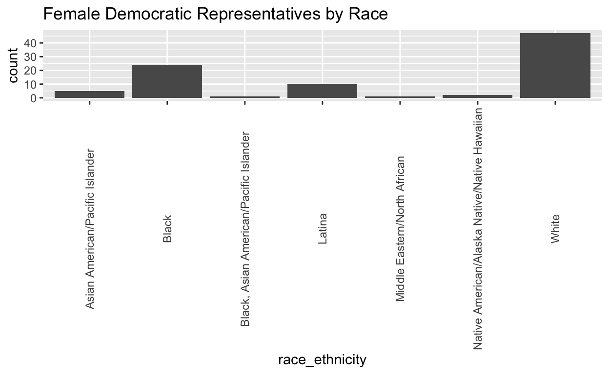

My final project
I am interested in exploring data related to US House Representatives and the average ages of their respective constituencies. I also would like to explore the differences between the ages of State House Representatives and Federal Representatives. I would like to explore what ages are less represented in this branch of government at each level.
Does the political affiliation of the state influence the number of female elected officials in Congress? In this study, I plan to examine gender trends in elected officials in Congress to see if first, there are greater numbers of female officials in certain states, and second, if this trend relates to the party affiliation of that region. I hypothesize that more Democratic-leaning states will have larger numbers of female senators/representatives. As seen historically, California, a left-leaning state, has elected more women to Congress than any other state. Furthermore, Congress has been getting progressively more female in recent years. The explanatory variable of interest is what political affiliation each state is. The variable is coded = 1 for Democratic and =0 for Republican. My outcome variable is the count of female elected officials in Congress for each respective state. For instance, if the variable is coded = 13, the data is indicating that there are 13 female representatives in Congress from that state. This variable will be measured from the Center for American Women and Politics’ dataset on Women elected officials. If I observe greater numbers of female elected officials in Democratic states relative to Republicans, this would provide support for my hypothesis. If, on the other hand, I observe less female representation in left-leaning states as compared to right, this would provide evidence against my hypothesis.
stateofficials <- read.csv("stateofficials.csv")
stateofficials ID Year First.Name Middle.Name Last.Name
1 196595k 2023 Alma S. Adams
2 159127k 2023 Tammy Baldwin
3 503276k 2023 Becca A. Balint
4 197852k 2023 Joyce B. Beatty
5 495403k 2023 Stephanie Bice
6 198986k 2023 Marsha Blackburn
7 558891k 2023 Lisa Blunt Rochester
8 724132k 2023 Lauren Boebert
9 249764k 2023 Suzanne M. Bonamici
10 596651k 2023 Katie Britt
11 772727k 2023 Shontel Brown
12 248455k 2023 Julia Brownley
13 693907k 2023 Nikki Budzinkski
14 571342k 2023 Cori Bush
15 452286k 2023 Laphonza Butler
16 447426k 2023 Kat Cammack
17 205537k 2023 Maria Cantwell
18 200084k 2023 Shelley Moore Capito
19 651512k 2023 Yadira Caraveo
20 248289k 2023 Kathy A. Castor
21 568297k 2023 Lori Chavez-DeRemer
22 665191k 2023 Sheila Cherfilus-McCormick
23 209456k 2023 Judy Chu
24 263010k 2023 Katherine M. Clark
25 248335k 2023 Yvette D. Clarke
26 165234k 2023 Susan Collins
27 252293k 2023 Catherine Cortez Masto
28 536254k 2023 Angela D. Craig
29 725560k 2023 Jasmine Felicia Crockett
30 655850k 2023 Sharice Davids
31 721272k 2023 Monica De La Cruz
32 569358k 2023 Madeleine Dean
33 158770k 2023 Diana L. DeGette
34 158778k 2023 Rosa L. DeLauro
35 284676k 2023 Suzan K. DelBene
36 536062k 2023 Nanette Diaz Barragan
37 357079k 2023 Debbie Dingell
38 264841k 2023 Tammy Duckworth
39 328986k 2023 Joni Ernst
40 634679k 2023 Veronica Escobar
41 158731k 2023 Anna G. Eshoo
42 195769k 2023 Michelle L. Fischbach
43 228296k 2023 Deb Fischer
44 397611k 2023 Valerie P. Foushee
45 196515k 2023 Virginia A. Foxx
46 193594k 2023 Lois J. Frankel
47 454041k 2023 Sylvia R. Garcia
48 248345k 2023 Kirsten E. Gillibrand
49 799642k 2023 Marie Gluesenkamp Perez
50 159082k 2023 Kay N. Granger
51 707878k 2023 Marjorie Greene
52 644129k 2023 Harriet M. Hageman
53 734559k 2023 Diana Harshbarger
54 227982k 2023 Maggie Hassan
55 666101k 2023 Jahana Hayes
56 572935k 2023 Ashley Hinson
57 248294k 2023 Mazie K. Hirono
58 344439k 2023 Erin Houchin
59 621721k 2023 Chrissy Houlahan
60 282137k 2023 Val Hoyle
61 196212k 2023 Cindy Hyde-Smith
62 644085k 2023 Sara Jacobs
63 499054k 2023 Pramila Jayapal
64 312779k 2023 Sydney K. Kamlager-Dove
65 159009k 2023 Marcy C. Kaptur
66 212680k 2023 Robin L. Kelly
67 702465k 2023 Jennifer A. Kiggans
68 494206k 2023 Young O. Kim
69 248506k 2023 Amy Klobuchar
70 284835k 2023 Ann McLane Kuster
71 158726k 2023 Barbara J. Lee
72 695573k 2023 Laurel Lee
73 159088k 2023 Sheila Jackson Lee
74 660014k 2023 Summer L. Lee
75 541030k 2023 Susie Lee
76 453352k 2023 Teresa Leger Fernandez
77 267627k 2023 Debbie Lesko
78 768497k 2023 Julia Letlow
79 158733k 2023 Zoe Lofgren
80 240578k 2023 Cynthia M. Lummis
81 716944k 2023 Anna Paulina Luna
82 466143k 2023 Nancy Mace
83 309650k 2023 Nicole Malliotakis
84 646745k 2023 Kathy Manning
85 232639k 2023 Doris O. Matsui
86 658185k 2023 Lucy McBath
87 721727k 2023 Lisa McClain
88 241253k 2023 Jennifer L. McClellan
89 195933k 2023 Betty McCollum
90 199779k 2023 Cathy McMorris Rodgers
91 271828k 2023 Grace Meng
92 249553k 2023 Carol D. Miller
93 721413k 2023 Mary Miller
94 267080k 2023 Mariannette Miller-Meeks
95 199871k 2023 Gwen S. Moore
96 192554k 2023 Lisa Murkowski
97 165286k 2023 Patty Murray
98 158751k 2023 Grace F. Napolitano
99 624858k 2023 Alexandria Ocasio-Cortez
100 583510k 2023 Ilhan Omar
101 625330k 2023 Elizabeth Pannill Fletcher
102 158725k 2023 Nancy Pelosi
103 803941k 2023 Mary Peltola
104 408919k 2023 Brittany L. Pettersen
105 267137k 2023 Chellie M. Pingree
106 621002k 2023 Katherine Porter
107 234321k 2023 Ayanna Pressley
108 645441k 2023 Delia C. Ramirez
109 567336k 2023 Jacklyn S. Rosen
110 211983k 2023 Deborah Ross
111 658161k 2023 Maria Salazar
112 637004k 2023 Andrea Salinas
113 211684k 2023 Linda T. Sanchez
114 655204k 2023 Mary Gay Scanlon
115 158836k 2023 Jan D. Schakowsky
116 711580k 2023 Hillary Scholten
117 632874k 2023 Kim Schrier
118 283908k 2023 Terri A. Sewell
119 209675k 2023 Jeanne Shaheen
120 625260k 2023 Mikie Sherrill
121 227495k 2023 Kyrsten Sinema
122 261745k 2023 Elissa Slotkin
123 332335k 2023 Tina Smith
124 630216k 2023 Abigail D. Spanberger
125 638877k 2023 Victoria Spartz
126 205511k 2023 Debbie A. Stabenow
127 461875k 2023 Melanie A. Stansbury
128 694474k 2023 Michelle Steel
129 247560k 2023 Elise M. Stefanik
130 623571k 2023 Haley Stevens
131 727678k 2023 Marilyn Strickland
132 486378k 2023 Emilia Strong Sykes
133 216162k 2023 Claudia Tenney
134 197530k 2023 Dina C. Titus
135 268236k 2023 Rashida Tlaib
136 249235k 2023 Jill N. Tokuda
137 267783k 2023 Norma J. Torres
138 636951k 2023 Lori Trahan
139 601601k 2023 Lauren A. Underwood
140 661605k 2023 Beth Van Duyne
141 158981k 2023 Nydia M. Velazquez
142 378827k 2023 Ann L. Wagner
143 309189k 2023 Elizabeth A. Warren
144 226499k 2023 Debbie Wasserman Schultz
145 158752k 2023 Maxine Waters
146 362925k 2023 Bonnie Watson Coleman
147 484877k 2023 Jennifer T. Wexton
148 638609k 2023 Susan Ellis Wild
149 648743k 2023 Nikema Williams
150 211856k 2023 Frederica S. Wilson
party Level Position state
1 Democrat Congress U.S. Representative North Carolina - NC
2 Democrat Congress U.S. Senator Wisconsin - WI
3 Democrat Congress U.S. Representative Vermont - VT
4 Democrat Congress U.S. Representative Ohio - OH
5 Republican Congress U.S. Representative Oklahoma - OK
6 Republican Congress U.S. Senator Tennessee - TN
7 Democrat Congress U.S. Representative Delaware - DE
8 Republican Congress U.S. Representative Colorado - CO
9 Democrat Congress U.S. Representative Oregon - OR
10 Republican Congress U.S. Senator Alabama - AL
11 Democrat Congress U.S. Representative Ohio - OH
12 Democrat Congress U.S. Representative California - CA
13 Democrat Congress U.S. Representative Illinois - IL
14 Democrat Congress U.S. Representative Missouri - MO
15 Democrat Congress U.S. Senator California - CA
16 Republican Congress U.S. Representative Florida - FL
17 Democrat Congress U.S. Senator Washington - WA
18 Republican Congress U.S. Senator West Virginia - WV
19 Democrat Congress U.S. Representative Colorado - CO
20 Democrat Congress U.S. Representative Florida - FL
21 Republican Congress U.S. Representative Oregon - OR
22 Democrat Congress U.S. Representative Florida - FL
23 Democrat Congress U.S. Representative California - CA
24 Democrat Congress U.S. Representative Massachusetts - MA
25 Democrat Congress U.S. Representative New York - NY
26 Republican Congress U.S. Senator Maine - ME
27 Democrat Congress U.S. Senator Nevada - NV
28 Democrat Congress U.S. Representative Minnesota - MN
29 Democrat Congress U.S. Representative Texas - TX
30 Democrat Congress U.S. Representative Kansas - KS
31 Republican Congress U.S. Representative Texas - TX
32 Democrat Congress U.S. Representative Pennsylvania - PA
33 Democrat Congress U.S. Representative Colorado - CO
34 Democrat Congress U.S. Representative Connecticut - CT
35 Democrat Congress U.S. Representative Washington - WA
36 Democrat Congress U.S. Representative California - CA
37 Democrat Congress U.S. Representative Michigan - MI
38 Democrat Congress U.S. Senator Illinois - IL
39 Republican Congress U.S. Senator Iowa - IA
40 Democrat Congress U.S. Representative Texas - TX
41 Democrat Congress U.S. Representative California - CA
42 Republican Congress U.S. Representative Minnesota - MN
43 Republican Congress U.S. Senator Nebraska - NE
44 Democrat Congress U.S. Representative North Carolina - NC
45 Republican Congress U.S. Representative North Carolina - NC
46 Democrat Congress U.S. Representative Florida - FL
47 Democrat Congress U.S. Representative Texas - TX
48 Democrat Congress U.S. Senator New York - NY
49 Democrat Congress U.S. Representative Washington - WA
50 Republican Congress U.S. Representative Texas - TX
51 Republican Congress U.S. Representative Georgia - GA
52 Republican Congress U.S. Representative Wyoming - WY
53 Republican Congress U.S. Representative Tennessee - TN
54 Democrat Congress U.S. Senator New Hampshire - NH
55 Democrat Congress U.S. Representative Connecticut - CT
56 Republican Congress U.S. Representative Iowa - IA
57 Democrat Congress U.S. Senator Hawaii - HI
58 Republican Congress U.S. Representative Indiana - IN
59 Democrat Congress U.S. Representative Pennsylvania - PA
60 Democrat Congress U.S. Representative Oregon - OR
61 Republican Congress U.S. Senator Mississippi - MS
62 Democrat Congress U.S. Representative California - CA
63 Democrat Congress U.S. Representative Washington - WA
64 Democrat Congress U.S. Representative California - CA
65 Democrat Congress U.S. Representative Ohio - OH
66 Democrat Congress U.S. Representative Illinois - IL
67 Republican Congress U.S. Representative Virginia - VA
68 Republican Congress U.S. Representative California - CA
69 Democrat Congress U.S. Senator Minnesota - MN
70 Democrat Congress U.S. Representative New Hampshire - NH
71 Democrat Congress U.S. Representative California - CA
72 Republican Congress U.S. Representative Florida - FL
73 Democrat Congress U.S. Representative Texas - TX
74 Democrat Congress U.S. Representative Pennsylvania - PA
75 Democrat Congress U.S. Representative Nevada - NV
76 Democrat Congress U.S. Representative New Mexico - NM
77 Republican Congress U.S. Representative Arizona - AZ
78 Republican Congress U.S. Representative Louisiana - LA
79 Democrat Congress U.S. Representative California - CA
80 Republican Congress U.S. Senator Wyoming - WY
81 Republican Congress U.S. Representative Florida - FL
82 Republican Congress U.S. Representative South Carolina - SC
83 Republican Congress U.S. Representative New York - NY
84 Democrat Congress U.S. Representative North Carolina - NC
85 Democrat Congress U.S. Representative California - CA
86 Democrat Congress U.S. Representative Georgia - GA
87 Republican Congress U.S. Representative Michigan - MI
88 Democrat Congress U.S. Representative Virginia - VA
89 Democrat Congress U.S. Representative Minnesota - MN
90 Republican Congress U.S. Representative Washington - WA
91 Democrat Congress U.S. Representative New York - NY
92 Republican Congress U.S. Representative West Virginia - WV
93 Republican Congress U.S. Representative Illinois - IL
94 Republican Congress U.S. Representative Iowa - IA
95 Democrat Congress U.S. Representative Wisconsin - WI
96 Republican Congress U.S. Senator Alaska - AK
97 Democrat Congress U.S. Senator Washington - WA
98 Democrat Congress U.S. Representative California - CA
99 Democrat Congress U.S. Representative New York - NY
100 Democrat Congress U.S. Representative Minnesota - MN
101 Democrat Congress U.S. Representative Texas - TX
102 Democrat Congress U.S. Representative California - CA
103 Democrat Congress U.S. Representative Alaska - AK
104 Democrat Congress U.S. Representative Colorado - CO
105 Democrat Congress U.S. Representative Maine - ME
106 Democrat Congress U.S. Representative California - CA
107 Democrat Congress U.S. Representative Massachusetts - MA
108 Democrat Congress U.S. Representative Illinois - IL
109 Democrat Congress U.S. Senator Nevada - NV
110 Democrat Congress U.S. Representative North Carolina - NC
111 Republican Congress U.S. Representative Florida - FL
112 Democrat Congress U.S. Representative Oregon - OR
113 Democrat Congress U.S. Representative California - CA
114 Democrat Congress U.S. Representative Pennsylvania - PA
115 Democrat Congress U.S. Representative Illinois - IL
116 Democrat Congress U.S. Representative Michigan - MI
117 Democrat Congress U.S. Representative Washington - WA
118 Democrat Congress U.S. Representative Alabama - AL
119 Democrat Congress U.S. Senator New Hampshire - NH
120 Democrat Congress U.S. Representative New Jersey - NJ
121 Independent Congress U.S. Senator Arizona - AZ
122 Democrat Congress U.S. Representative Michigan - MI
123 Democrat Congress U.S. Senator Minnesota - MN
124 Democrat Congress U.S. Representative Virginia - VA
125 Republican Congress U.S. Representative Indiana - IN
126 Democrat Congress U.S. Senator Michigan - MI
127 Democrat Congress U.S. Representative New Mexico - NM
128 Republican Congress U.S. Representative California - CA
129 Republican Congress U.S. Representative New York - NY
130 Democrat Congress U.S. Representative Michigan - MI
131 Democrat Congress U.S. Representative Washington - WA
132 Democrat Congress U.S. Representative Ohio - OH
133 Republican Congress U.S. Representative New York - NY
134 Democrat Congress U.S. Representative Nevada - NV
135 Democrat Congress U.S. Representative Michigan - MI
136 Democrat Congress U.S. Representative Hawaii - HI
137 Democrat Congress U.S. Representative California - CA
138 Democrat Congress U.S. Representative Massachusetts - MA
139 Democrat Congress U.S. Representative Illinois - IL
140 Republican Congress U.S. Representative Texas - TX
141 Democrat Congress U.S. Representative New York - NY
142 Republican Congress U.S. Representative Missouri - MO
143 Democrat Congress U.S. Senator Massachusetts - MA
144 Democrat Congress U.S. Representative Florida - FL
145 Democrat Congress U.S. Representative California - CA
146 Democrat Congress U.S. Representative New Jersey - NJ
147 Democrat Congress U.S. Representative Virginia - VA
148 Democrat Congress U.S. Representative Pennsylvania - PA
149 Democrat Congress U.S. Representative Georgia - GA
150 Democrat Congress U.S. Representative Florida - FL
District race_ethnicity
1 NA Black
2 NA White
3 NA White
4 NA Black
5 NA White
6 NA White
7 NA Black
8 NA White
9 NA White
10 NA White
11 NA Black
12 NA White
13 NA White
14 NA Black
15 NA Black
16 NA White
17 NA White
18 NA White
19 NA Latina
20 NA White
21 NA White, Latina
22 NA Black
23 NA Asian American/Pacific Islander
24 NA White
25 NA Black
26 NA White
27 NA Latina
28 NA White
29 NA Black
30 NA Native American/Alaska Native/Native Hawaiian
31 NA Latina
32 NA White
33 NA White
34 NA White
35 NA White
36 NA Latina
37 NA White
38 NA Asian American/Pacific Islander
39 NA White
40 NA Latina
41 NA White
42 NA White
43 NA White
44 NA Black
45 NA White
46 NA White
47 NA Latina
48 NA White
49 NA Latina
50 NA White
51 NA White
52 NA White
53 NA White
54 NA White
55 NA Black
56 NA White
57 NA Asian American/Pacific Islander
58 NA White
59 NA White
60 NA White
61 NA White
62 NA White
63 NA Asian American/Pacific Islander
64 NA Black
65 NA White
66 NA Black
67 NA White
68 NA Asian American/Pacific Islander
69 NA White
70 NA White
71 NA Black
72 NA White
73 NA Black
74 NA Black
75 NA White
76 NA Latina
77 NA White
78 NA White
79 NA White
80 NA White
81 NA White, Latina
82 NA White
83 NA White, Latina
84 NA White
85 NA Asian American/Pacific Islander
86 NA Black
87 NA White
88 NA Black
89 NA White
90 NA White
91 NA Asian American/Pacific Islander
92 NA White
93 NA White
94 NA White
95 NA Black
96 NA White
97 NA White
98 NA Latina
99 NA Latina
100 NA Black
101 NA White
102 NA White
103 NA Native American/Alaska Native/Native Hawaiian
104 NA White
105 NA White
106 NA White
107 NA Black
108 NA Latina
109 NA White
110 NA White
111 NA Latina
112 NA Latina
113 NA Latina
114 NA White
115 NA White
116 NA White
117 NA White
118 NA Black
119 NA White
120 NA White
121 NA White
122 NA White
123 NA White
124 NA White
125 NA White
126 NA White
127 NA White
128 NA Asian American/Pacific Islander
129 NA White
130 NA White
131 NA Black, Asian American/Pacific Islander
132 NA Black
133 NA White
134 NA White
135 NA Middle Eastern/North African
136 NA Asian American/Pacific Islander
137 NA Latina
138 NA White
139 NA Black
140 NA White
141 NA Latina
142 NA White
143 NA White
144 NA White
145 NA Black
146 NA Black
147 NA White
148 NA White
149 NA Black
150 NA Blackstateofficials |>
group_by(state, party) |>
ggplot(mapping = aes(x = party, y = state)) +
geom_point()